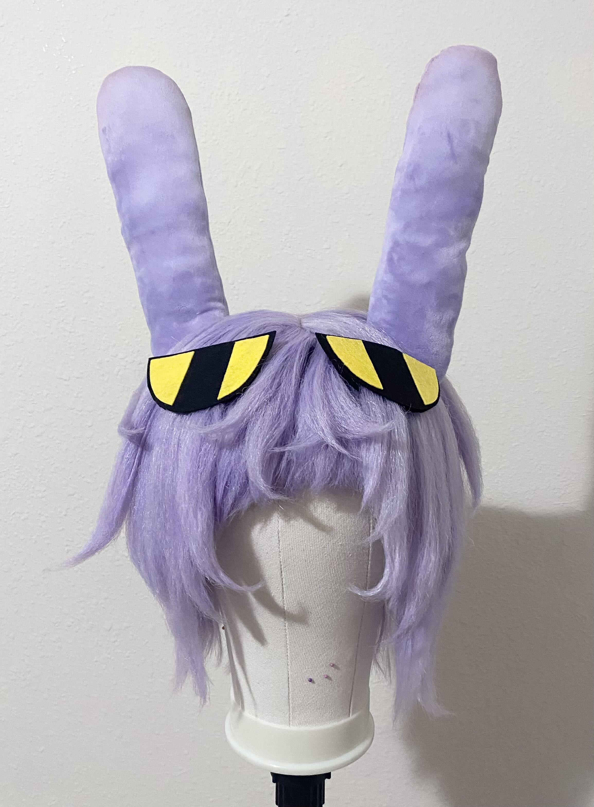
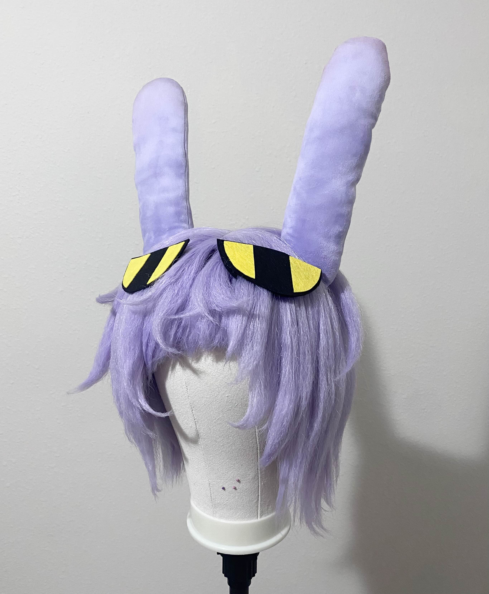

Cosplay Adventures
The Technical Stuff
"Jax" Pale Lilac Wig
His ears are posable and installed into the wig. The eyes are made with felt and have a pocket that allows the hair to slip in and out while staying secure onto the wig.

